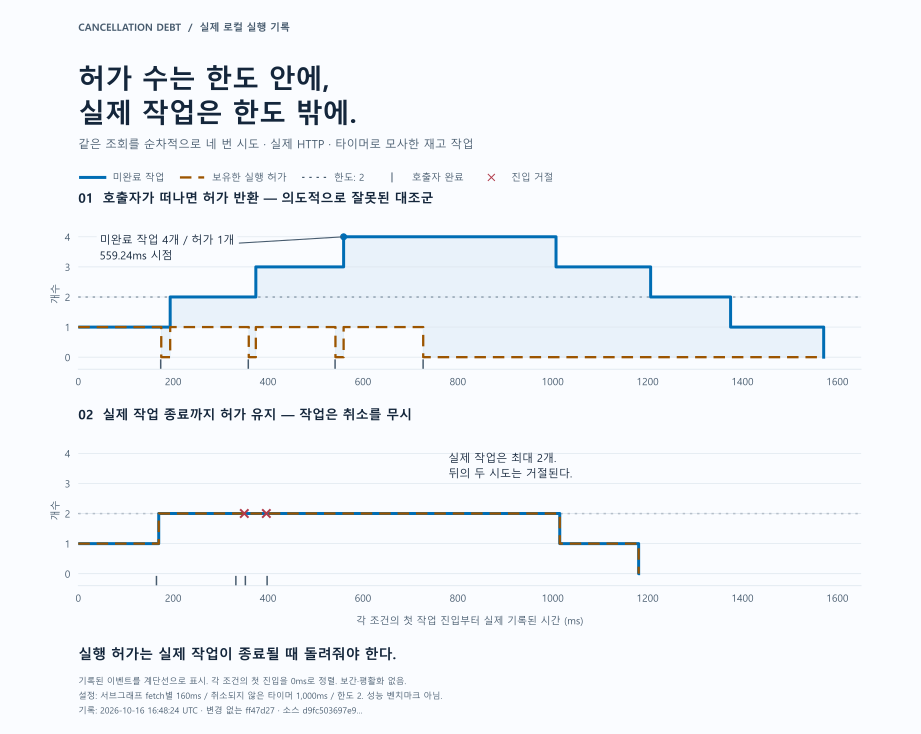
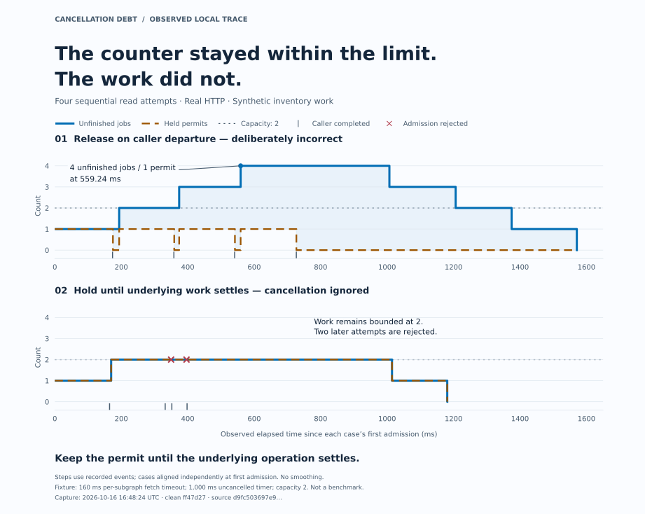

CANCELLATION DEBT / GRAPHQL SYSTEMS
타임아웃 뒤, 실행 슬롯은 언제 반환해야 할까?The permit returned. The work remained.
호출자는 시간 초과로 기다리기를 멈췄지만 재고 조회는 계속됩니다. 실행 슬롯을 바로 반환하면 재시도가 남은 작업과 겹칠 수 있고, 작업이 끝날 때까지 잡고 있으면 다음 요청을 거절할 수 있습니다. 무엇을 실행 한도로 세어야 할까요?
The caller times out while inventory work continues. Release the permit and a retry can overlap unfinished work; hold it until the work ends and the next request may be rejected. Which lifetime should the concurrency limit bound?
01카운터는 정상인데, 작업은 한도를 넘었다Work left behind a healthy counter
이 개인 실험은 실제 Apollo Federation HTTP 요청에서 타임아웃과 동시 실행 제한을 함께 비교합니다. 슬롯(permit)은 동시에 실행할 수 있는 작업 한 자리를 뜻하며, 2개를 두었습니다. 잘못된 반환 정책에서는 점유한 슬롯이 최대 1개였지만, 아직 끝나지 않은 작업은 4개였습니다.
여러 GraphQL API의 진입점인 게이트웨이와, 개별 API인 HTTP 서브그래프 세 개를 연결했습니다. 재고 조회 작업은 타이머로 모사했습니다. 같은 조회를 최초 한 번과 재시도 세 번, 총 네 번 순차적으로 요청했습니다. 각 서브그래프 fetch의 타임아웃은 160ms, 취소되지 않은 타이머는 1,000ms였습니다. 앞선 작업이 끝나기 전에 재시도 작업이 시작되는 상황을 만들기 위한 설정입니다.
비교용으로 만든 잘못된 구현은 응답을 기다리던 HTTP 연결이 끊기면 슬롯을 반환했습니다. 하위 작업은 취소를 무시하고 계속 실행됐습니다. 첫 작업을 받은 뒤 559.24ms 시점에 네 번째 작업을 받았습니다. 미완료 작업은 네 개, 점유한 슬롯은 한 개였습니다. 슬롯 수 검사만으로는 실제 작업의 한도를 검증할 수 없었습니다.
This independent lab compares timeouts and concurrency limits over real Apollo Federation HTTP calls. Each job must hold a permit—one place in the concurrency budget—to start. Capacity was two. The incorrect release policy reported at most one held permit while four jobs remained unfinished.
A gateway provides one entry point to three individual GraphQL APIs, or subgraphs, over HTTP. Synthetic inventory work used a timer. The client made four sequential attempts of the same read: an initial attempt and three retries. Each subgraph fetch had a 160 ms timeout; the uncancelled timer was 1,000 ms. These fixtures expose overlapping lifetimes.
The deliberately incorrect control returned a permit when the waiting HTTP connection disappeared. The dependency ignored cancellation and continued. At 559.24 ms after the first admission, the fourth job entered: four unfinished jobs, one held permit. Checking the permit counter alone did not verify the actual-work bound.


좁은 화면에서는 그림을 좌우로 움직일 수 있습니다. 키보드로 영역을 선택한 뒤 방향키를 사용하세요.On a narrow screen, scroll the figure sideways. Keyboard users can focus this region and use the arrow keys.


02슬롯은 작업이 끝난 뒤에 반환한다The permit follows the operation’s lifetime
실제 작업이 종료될 때까지 슬롯을 점유하자, 취소를 무시하는 같은 조건에서도 최대 동시 작업은 두 개였습니다. 대신 남아 있는 작업이 자리를 차지하는 동안 뒤의 두 시도를 거절했습니다.
취소 신호가 하위 HTTP 요청까지 전달되도록 Apollo의 서브그래프 fetcher를 구성했습니다. 응답 완료 전에 연결이 끊기거나, 별도로 전달한 재고 조회 기한이 지나면 취소를 요청합니다. 타이머가 신호를 받아 실제로 종료된 뒤에야 슬롯을 반환합니다.
이 저장 기록에서는 협력적 취소의 네 작업 모두 전달된 기한을 통해 취소됐고 최대 동시 작업은 한 개였습니다. 모든 연결 종료 경로가 이번 기록에서 실행됐다는 뜻은 아닙니다.
작업 기록에는 요청 수락, 취소 요청, 작업 종료, 슬롯 반환, 호출자 완료를 별도 이벤트로 남깁니다. 검사기는 이벤트에서 두 카운터를 재구성하고 요청 식별자를 대조합니다. 취소를 요청했다는 기록만으로 작업이 종료됐다고 판단하지 않습니다. 잘못된 대조군은 슬롯 수 검사에는 통과하지만 실제 실행 한도와 슬롯 반환 시점 검사에는 실패합니다.
Holding the permit until the underlying operation settled kept peak activity at two, even with the same cancellation-ignoring dependency. Two later attempts were rejected while abandoned work occupied the slots. That is the visible cost of maintaining the bound when the dependency will not stop.
Cancellation is explicitly wired across the HTTP boundary. Apollo’s custom subgraph fetcher carries the request signal. Premature response closure and a separately forwarded inventory deadline can request cancellation. The timer must consume the signal and settle before returning its permit.
In this saved run, all four cooperative jobs stopped through the forwarded deadline path; peak activity was one. This does not mean every disconnect path fired in this capture.
A separate work ledger records admission, cancellation request, settlement, permit release and caller completion. The checker reconstructs both counters and matches request identities. A cancellation request never counts as completed cancellation. The incorrect control passes its permit-counter check but fails the physical-bound and permit-lifetime checks.
03취소가 멈출 수 있는 범위Where cancellation stops helping
한 호스트에서 HTTP 요청과 소켓 종료를 실제로 실행하고, 하위 작업은 타이머로 모사했습니다. 160ms는 서브그래프 fetch별 제한이며 사용자 요청 전체의 시간 예산이 아닙니다. 네 번의 시도에서 관측한 작업 수를 처리량이나 성능 개선율로 일반화하지 않습니다.
취소가 DB 작업, CPU 연산, 외부 서비스나 이미 반영된 효과를 자동으로 멈추게 하지는 않습니다. 이 실험의 서비스들은 하나의 이벤트 루프를 공유합니다. 이벤트 루프를 막는 작업이 있으면 취소와 타임아웃 처리도 늦어집니다. 한도는 하나의 재고 프로세스에 적용됩니다. 검사기는 관측되지 않은 작업까지 증명하지 않으며, 소스 해시는 실행의 진위를 인증하지 않습니다.
This is real HTTP and socket closure around synthetic timer work on one host. The 160 ms setting belongs to each subgraph fetch, not the end-to-end user request. Four attempts do not establish throughput or a performance improvement.
Cancellation does not automatically stop a database query, CPU task, remote service or committed effect. All services share an event loop; blocking it delays cancellation and timeouts too. The limit applies to one inventory process. The checker cannot detect uninstrumented work, and source hashes are not execution attestations.
기다림이 끝나도 작업은 계속될 수 있습니다.
실행 슬롯은 그 작업이 끝난 뒤에 반환해야 합니다.
A caller can stop waiting while its work continues.
Release the permit only when that work ends.
04근거를 직접 읽기Read the evidence
네 정책의 원본 이벤트, 응답, 독립 검사 결과를 보존한 보고서입니다. 보고서의 전체 passed는 예상한 성공·실패 조건이 재현됐다는 뜻입니다. 잘못된 비교용 구현까지 실행 한도를 지켰다는 의미는 아닙니다. 그림은 이 과거 기록을 사용했습니다.
The report preserves events, responses and independent checks for four policies. Overall passed means the intended counterexample was reproduced, not that the incorrect limiter is safe. The figure uses this historical capture.
기록 시점과 소스 식별 정보Capture and source identity
- 기록 시점Captured at
- 소스 리비전Source revision
ff47d27ac38071cf7d1c611492b55f657d8d0a27- 소스 지문Source fingerprint
-
d9fc503697e95ce98a342a1152d87cd529fdcb3283b50e0c2f817ccf118333f8 - 기록의 범위Recording scope
- 당시 변경 사항이 없는 소스에서 저장한 실행입니다. 현재 HEAD의 새 실행 결과가 아닙니다.Saved from clean source at that revision. This is not a fresh execution of the current HEAD.
- Apollo Gateway API — 사용자 정의 서브그래프 fetcher
- Node 24.19 HTTP — 응답 종료와 writableFinished
- Node 24.19 timers — signal을 받는 타이머의 취소
- Apollo Gateway API — custom subgraph fetchers
- Node 24.19 HTTP — response closure and writableFinished
- Node 24.19 timers — cancellation of signal-aware timers
연결한 실행 기록은 읽기 전용이며, 이 페이지는 실험을 실행하지 않습니다.The linked recording is read-only; this page does not run the experiment.
여러 요청이 하나의 작업을 함께 기다리면, 취소와 정리의 기준도 달라집니다. When callers share one execution, cancellation and cleanup need separate owners. 응답은 정상인데, 조회가 중복됐다 → Correct responses, duplicate work →
같은 Federation 실험에서 생성 타입과 컴파일 입력도 비교했습니다. The same Federation lab also compares generated types with the inputs used for compilation. 검사는 통과했지만, 생성 타입은 예전 것이었다 → The checks passed. The generated types were stale. →